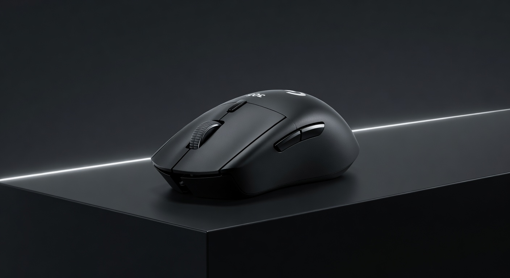

As an Amazon Associate I earn from qualifying purchases. Links below may earn us a commission at no extra cost to you.
Logitech G305 vs G Pro X Superlight 2: Same Brand, $110 Apart
Both are Logitech wireless mice. Both use LIGHTSPEED 1ms wireless. But the G305 costs $49 and runs on a AA battery, while the G Pro X Superlight 2 costs $159 and weighs 60g with a built-in rechargeable. The gap is bigger than the price difference suggests — and smaller than you'd expect where it counts most.

Logitech G305
~$49
VS

Logitech G Pro X Superlight 2
~$159
Quick Verdict
G305 is remarkable value; Superlight 2 is the better mouse — gap is real
The G305 at $49 wireless is one of the best value propositions in gaming peripherals — LIGHTSPEED at budget price. But the Superlight 2 earns its premium three ways: HERO 2 sensor (more accurate than the G305's HERO), 60g vs 99g with battery, and rechargeable vs AA. For competitive players who care about weight, the Superlight 2 is worth the upgrade. For casual players who want wireless at an honest price, the G305 punches far above its tag.
Head-to-Head: Category by Category
Sensor
G Pro X Superlight 2
The Superlight 2 uses Logitech's HERO 2 sensor (32K DPI, zero jitter, no acceleration at any speed). The G305 uses the original HERO (12K DPI) — excellent but measurably below HERO 2 at high movement speeds. At standard DPI settings the difference is imperceptible. At 1600+ DPI in fast-paced games, HERO 2 maintains accuracy that HERO starts to lose.
Weight
G Pro X Superlight 2 — significantly
The G305 weighs ~99g with its AA battery installed. The Superlight 2 weighs 60g — nearly 40% lighter. For claw grip and fingertip grip players who do large arm movements, this difference is tangibly impactful. Once you've used a 60g mouse, a 99g mouse feels noticeably heavy. For palm grip players who rarely lift, the gap matters less.
Wireless Quality
Tie — both LIGHTSPEED 1ms
This is the G305's trump card: it uses the same LIGHTSPEED wireless as mice that cost 3× as much. At 1ms polling, both are functionally wired. Logitech didn't downgrade the receiver for the budget model. If wireless performance is your main concern, the G305 solves it completely at $49.
Battery / Charging
G Pro X Superlight 2
The Superlight 2 has a built-in rechargeable (USB-C, 70 hours) and supports Logitech PowerPlay wireless charging. The G305 uses a standard AA — rated 250 hours, exceptional runtime, but you're buying AAs. For most players, 250 hours is more convenient than remembering to charge. The Superlight 2's PowerPlay support (charge while playing on a compatible mousepad) is a genuine upgrade for heavy users.
Shape
Personal preference
Both are ambidextrous. The G305 has a slightly taller hump that some players prefer for palm grip. The Superlight 2 is more refined with better side contouring. Neither dominates — try both if possible. Both suit claw, fingertip, and palm grip styles.
Value
G305 — by a wide margin
$49 with LIGHTSPEED wireless and HERO sensor is extraordinary. No other brand comes close at this price. The Superlight 2's $110 premium buys real improvements (weight, HERO 2, charging ecosystem) — but they're performance gains, not baseline requirements. The G305 gives you a legitimately competitive wireless mouse at a price that doesn't sting.
Spec Comparison
| Spec | Logitech G305 | Logitech G Pro X Superlight 2 |
|---|---|---|
| Price | ~$49 | ~$159 |
| Sensor | HERO (12K DPI) | HERO 2 (32K DPI) |
| Weight | ~99g (with AA battery) | 60g |
| Wireless | LIGHTSPEED 1ms | LIGHTSPEED 1ms |
| Battery | AA (250 hours) | Built-in rechargeable (70 hours) |
| Charging | Battery replacement | USB-C + PowerPlay support |
| Shape | Ambidextrous compact | Ambidextrous refined |
| RGB | No | No |
Which Should You Buy?
Logitech G305
~$49
Best for: Best-value wireless · Casual competitive · Budget-conscious buyers
🛒 Check Price on Amazon
Full Review →
Logitech G Pro X Superlight 2
~$159
Best for: Serious competitive play · Weight-conscious · PowerPlay ecosystem
🛒 Check Price on Amazon
Full Review →
More Mouse Guides & Comparisons
Frequently Asked Questions
Yes — LIGHTSPEED wireless at $49 remains the best value in wireless gaming mice. The HERO sensor is genuinely competitive, not a budget compromise. The only real downsides are weight (99g with battery vs 60g for premium mice) and the older sensor ceiling. If you're not playing at a level where those 1% sensor differences affect outcomes, the G305 is a fantastic value buy in 2026.
Logitech rates the G305 at 250 hours on a single AA battery. At moderate use of 4–6 hours daily, that's 6–8 weeks between changes. Many players prefer this over charging because you're never caught mid-session with a dead mouse — just swap the battery. Keep a spare AA and you'll never worry about it.
Yes, clearly. 99g vs 60g is nearly 40% lighter. Players switching from the G305 to the Superlight 2 consistently describe the lighter mouse as effortless for flicks and repositioning. However, if you've gamed on a 99g mouse for years and never tried lighter, you won't miss what you don't know. Weight matters most for large arm movements and long sessions where fatigue accumulates.
The Logitech G305. It's the only mouse under $60 with LIGHTSPEED 1ms wireless — every other option at this price uses Bluetooth (higher latency) or a slower 2.4GHz connection. For competitive gaming, LIGHTSPEED is the standard, and the G305 is the only way to get it at this price point.
Affiliate Disclosure: As an Amazon Associate I earn from qualifying purchases. Prices may vary.